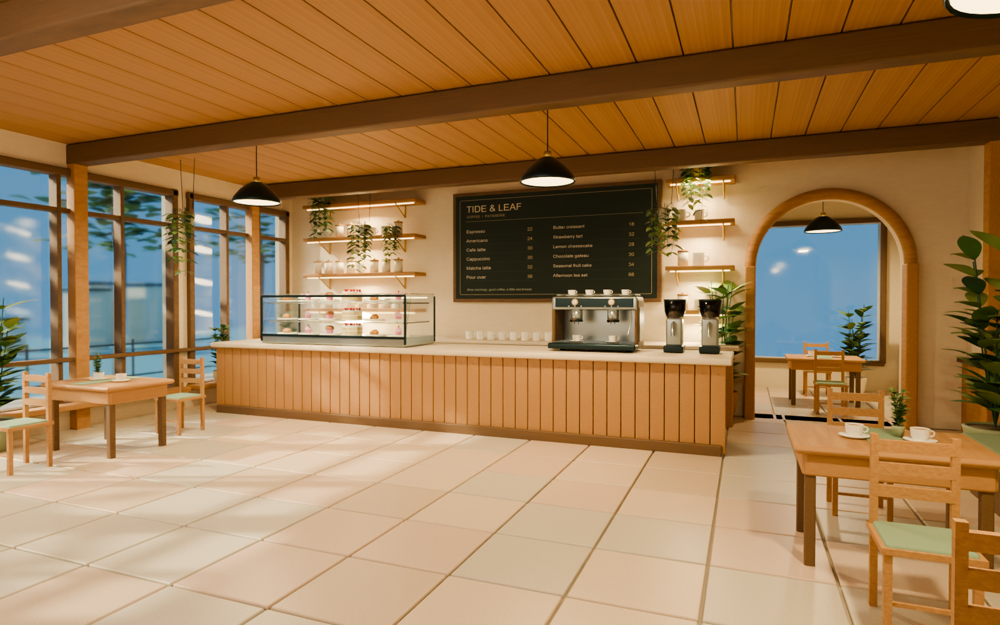
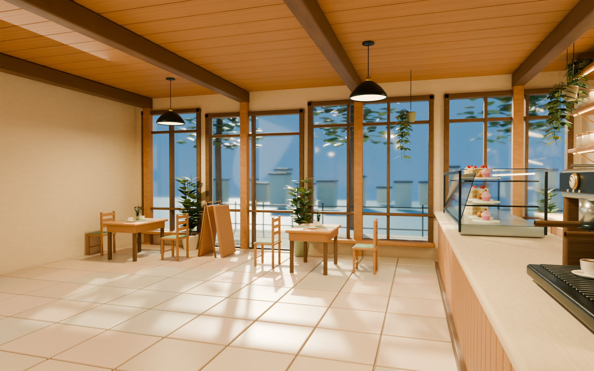
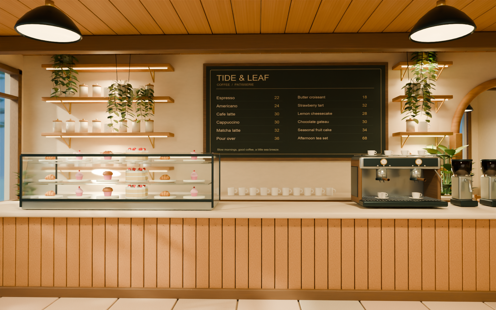
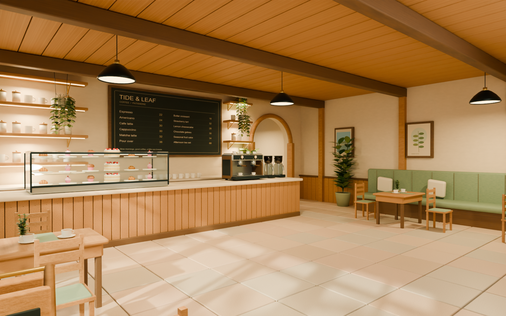
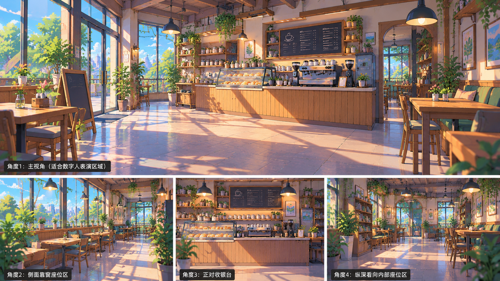

有厚度的深木窗框、分格玻璃、门把手；逐块拼板吧台、木钉与石材台面；甜点柜有金属边框、三层陈列、倾斜前玻璃和十八份甜点。
双头咖啡机含压力表刻度、按键、冲煮头、木手柄、蒸汽棒、滴水格栅和暖杯栏杆。层架配陶罐与杯子，五组木桌、十把椅子、长卡座、靠垫和植物组成座位区。
六个结构开口采用 Blender Exact Boolean。弯曲叶片、分枝与垂挂植物为真实网格；灯具有吊线和灯座。纹理已打包进 .blend；原点中央为数字人留白。



